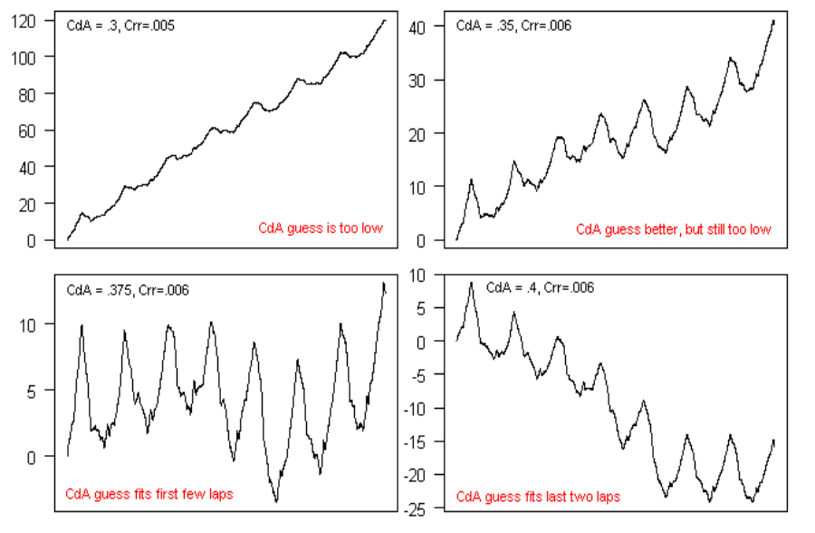

GoldenCheetah
- Downloads or Imports ride data directly from many devices
- Imports ride data downloaded with other programs
- Provides a rich set of analysis tools
- Is available for Linux, MacOS, and Windows.
- Is released under an Open Source license.
We are proud to announce the release of version 3.5 of GoldenCheetah.
Installation is simple. Download the file for your operating system.
You can also view the release notes for 3.5
Version 3.6 Development Build June 2020
The latest development build for version 3.6 released in June 2020 and includes significant updates for the overview, user charts and metrics.
ALWAYS TAKE A BACKUP BEFORE RUNNING DEVELOPMENT BUILDSWe now automatically publish snapshot builds when significant new enhancements are available or when a major bug is squashed. These builds may contain regressions as they will only have been tested by developers (and we all know how reliable they are). Don't be surprised if things go wrong !
ALWAYS TAKE A BACKUP BEFORE RUNNING SNAPSHOT BUILDS
Multiple charts to examine and analyse ride and interval data including:


Track performance and physiological markers for over 300 metrics, user-definable best durations, model estimates:


Sean Rhea bought a PowerTap Pro on April 20, 2006 and immediately set
to figuring out how to use it from his Mac without using Virtual PC.
With help from Russ Cox and David Easter, he wrote two command-line
programs for downloading data from a PowerTap and interpreting that
data. Sean released these two tools, ptdl and
ptunpk, on May 4, 2006.
Later that year, Sean needed to learn QT for his real job, and he set about writing a graphical version of his software for practice. He released the first graphical version on September 6, 2006, changing the name to GoldenCheetah in reference to an old legend from his days as a runner.
Over the course of the next couple of years training with power became more popular with devices being more widely used in the amateur ranks. The community around the project grew and in 2010 as Sean stopped racing competively he handed over leadership of the project to Mark Liversedge.
Since then, a large and global community has contributed additional code and other support.
Wherever possible we choose to use published science. Science that has been developed with the academic rigour demanded by the scientific method; evidence based, peer-reviewed and original. This means we are able to provide the best analysis available, but at the cost of a steep learning curve for new users. So below, we try to introduce some of the most important concepts, why they are important and how they might help you to improve.
How hard can you go, in watts, for half an hour is going to be very different to how hard you can go for say, 20 seconds. Then thinking about how hard you can go for a very long time will be different again. When it comes to reviewing and tracking changes in your performance and planning future workouts you quickly realise how useful it is to have a good understanding of your own limits.
 In 1965 two scientists Monod and Scherrer presented a ‘Critical Power Model’
where the Critical Power of a muscle is defined as ‘the maximum rate of work that
it can keep up for a very long time without fatigue’. They also proposed an
‘energy store’ (later to be termed W’) that represented a finite amount of work
that could be done above that Critical Power.
In 1965 two scientists Monod and Scherrer presented a ‘Critical Power Model’
where the Critical Power of a muscle is defined as ‘the maximum rate of work that
it can keep up for a very long time without fatigue’. They also proposed an
‘energy store’ (later to be termed W’) that represented a finite amount of work
that could be done above that Critical Power.
In cycling parlance W’ would be referred to as the matchbook– the harder you go the quicker it will be used up, but temper your efforts and you can ‘save a match’ for the last sprint. CP, on the other hand, is that intensity (or power output) where you are uncomfortable but stable, akin to your TT pace. You know that if you try to go any harder you are gonna blow up pretty quickly.
Monod and Scherrer also provided a mathematical formula to estimate the maximum power you can go for any given duration using W’ and CP as parameters. This formula is pretty reliable for durations between 2 minutes and an hour or so, but less reliable for shorter and longer durations. So, over the last 50 years, variations of these models have been developed to address this, and it still continues to be a topic of great scientific interest.
We have implemented some of these models so you can get power estimates to predict and review your training and racing. We have also implemented a wholly new model called the ‘Extended CP model’ that is based upon bioenergetics.
 We use complex sources of overlapping energy when we exercise.
These energy sources are anaerobic with a limited capacity and a high rate limit
(like W’) and aerobic with an unlimited capacity but a low rate limit (like CP).
We use complex sources of overlapping energy when we exercise.
These energy sources are anaerobic with a limited capacity and a high rate limit
(like W’) and aerobic with an unlimited capacity but a low rate limit (like CP).
In the first 10 seconds or so of high output work we draw upon energy stored within the muscles that have immediate availability – so we can sprint all out for 10-30 seconds without drawing breath and at very high work rates. These chemicals are phosphates called ATP (adenosine triphosphate) and PCr (phosphorcreatine). Interestingly, after about 3 minutes of total rest these stores are largely replenished.
So for the next 50 seconds or so after those phosphates are depleted we primarily get our energy from glycolysis and still without drawing breath. This is the conversion of glucose into lactate. It takes us about 1 hr to recover and remove all the lactate produced, but most of it is gone after about 10 minutes – and we can speed up this clearance through light exercise – which is why a warm-down is a good idea after intense exercise.
But now, sadly, after that all-out minute we are going to have to draw breath, because we need the oxygen to power the aerobic energy systems. First up we get aerobic glycolysis, this is converting glucose into pyruvate by burning it with oxygen in a really complicated 10 stage cycle. The conversion rate is limited by the amount of oxygen the lungs can absorb (VO2max) and the available fuels. It can take anywhere between 1-3 minutes to get up to ‘peak’ production and then dies away slowly over time. Once all the glucose is gone, we will bonk, which is why gels and powders are high in easily digested glucose – to refuel this process. Lastly, from about 6-7 minutes we start to rely upon lipolysis that utilises an almost limitless source of energy; fat and water. So stay hydrated !
Our Extended Power Duration Model extracts the likely contribution of these energy systems to predict the energy production (or watts per second). This is akin to reading the fuel gauge to work out how fast you’re going in a car. It’s not an exact science and so yields an approximated answer, which can be slightly overestimated because it doesn’t really consider why we fatigue.
It is likely that in the next 2-3 years current research will help to explain muscular, neural and psychological fatigue or constraints. These in turn can be used to refine our models. Research is also likely to expand our understanding of W’ and CP and how they reflect underlying physiology and associated dynamics (maybe even CP fluctuates depending upon how we ride).
Roughly 40% of your body weight is muscle; skeletal muscle that’s attached to your bones via tendons and are controlled via conscious thought (“shut up legs, pedal faster”), but also smooth muscle including arteries, the bladder, eye and reproductive organs and of course cardiac muscle pumping blood 24x7 and again without any conscious thought.
We’re going to focus on skeletal muscle. Our legs contain lots of different muscle groups; the quadriceps, hamstrings, calves etc. These muscle groups work together when we walk, run, kick and jump. Each muscle group in turn is comprised of a large number of motor units (MU) that in turn contain a motor neuron and a collection of muscle fibres. Our brain triggers a muscle group into action by recruiting as many of its motor units as needed to meet the power we want. It does this by firing the motor neurons that sends an electrical pulse to the muscle fibres causing them to contract.
The speed that a muscle fibre contracts is known as twitchiness; we have type I known as slow-twitch fibres that, true to their name, don’t contract quickly but can keep doing it for a long time and a type II also known as fast-twitch that are, unsurprisingly, very quick, but also fatigue more quickly too. Those fast-twitch fibres are further broken down into type IIa and IIx/d. Typically, slow-twitch reach their peak tension in about 100ms, with IIa at 50ms and IIx/d at 25ms. The other important distinction between the fibre types is the force that they apply; slow-twitch type I fibres apply a low force, where fast-twitch type IIa apply a medium force, whilst IIx/d are unsurprisingly the strongest. We typically have very few IIx/d which is why we can exhaust them with relatively few repetitions of an exercise when weight training.
Slow-twitch fibres contain a high number of mitochondria; often referred to as cellular power-plants. They 'generate' energy on demand in that complex 10-step process mentioned above (its actually called The Krebs Cycle). In contrast, fast-twitch muscles contain far fewer mitochondria and instead have greater stores of glycogen and the enzymes needed to to produce energy without oxygen. As a result, slow-twitch muscles are fuelled primarily from fat at endurance intensities, but will utilise glycogen at tempo and higher intensities. IIa are fuelled primarily from glycogen but can utilise fat whilst those strong and quick IIx/d only use glycogen.
In healthy adults the distribution of type I/II differs significantly by muscle group and also to a lesser extent upon your genetics but a typical basal distribution of fibre types in the quads would be in the range 55% I, 32% IIa, 11% IIx and 2% IId. With the right kind of training it is possible to 'convert' type IIa to type I which improves aerobic endurance performance but at the cost of a loss of some strength. This is typically achieved through lots of hours riding at a lower intensity, below LT1. Explosive and high intensity workouts will typically signal greater type II muscle fibre growth. So the worst thing for a sprinter to do is ride a 3 week multi-stage race like the Tour de France !
As we increase the force we want to generate our brains will recruit more and more of the motor units to meet the demand. As the demand gets higher we reach a point where all motor units available will be firing. When fresh and all motor units are available we will hit our P-max power, but if we’re fatigued some of those muscles will be exhausted and unavailable – and our maximum power will be reduced. This peripheral fatigue occurs much earlier for fast-twitch than slow-twitch muscles. So our brain will always recruit from slow-twitch before fast-twitch muscles to meet demand – so the fast twitchers are saved for when we really need them.
Aside from fatigue within the muscle fibres, our brains and neurons will also limit what we can achieve; in some cases this keeps us well within our natural capabilities, perhaps as a ‘safety mechanism’. And there is lots of research being done into this central fatigue to see how if differs by individual and how much it can be changed with training and the right ‘motivation’.
Lactate is a double edged sword; on the one hand it is the primary source of 30% of the glucose we generate within the body, but on the other hand it also regulates metabolism — a safety mechanism within the body.
Lactate is produced when we burn glucose; aerobically and anaerobically. During intense exercise it is mostly produced by the fast-twitch muscles that utilise glycogen. However, it is not a waste product as was widely believed in the past; it inhibits fat oxidation and also glucose utilisation within our muscle cells — it even reduces muscle shortening and thus peak power. It is a 'brake' to stop us going too hard, helping us to pace for the long run. But of course, we might not want that to happen if we're winding it up for the finish straight !
Further, the mitochondria within our slow-twitch fibres and in fact most of our bodily organs can utilise lactate to create glucose. So our body creates it to regulate our metabolism, but will also use it for fuel, either when we settle down a bit or by "shuttling" it in the bloodstream from the active leg skeletal muscles to the smooth muscles in our heart and lungs.
Lactate also causes an increase in PGC-1a that results in increased mitochondria biogenesis (we can also increase PGC-1a signalling and associated mitochondria biogenesis by riding when fasted). This is an exciting area of development that is beginning to suggest that lactate has significant beneficial effects rather than being detrimental.
Lactate is always produced even at lower intensities of exercise. Initially our blood flow will clear lactate away as it is produced to the liver, heart, kidneys where it is slowly converted and stored as fuel for re-use. Additionally whilst we are working at these lower intensities some of the lactate produced is converted back into glucose within the muscles themselves (which also helps to clear lactate when we rest or "lift off the gas for a moment"). The reason this only occurs at lower intensity is because it is the slow-twitch muscle fibres that contain a transporter called MCT-1 that controls lactate re-use within the fibre mitochondria. And slow-twitch muscles will all be busy when we exercise at higher intensities.
As we work a little harder lactate will be created a bit faster, but at the same time blood flow increases our heartrate goes up so we keep clearing it. But eventually we get to a point where lactate levels increase above the baseline (typically 1mmol above), this point is known as “LT1”. At this point we will feel that we are working, but no more than a tempo pace. As we continue to go harder, blood lactate accumulation will increase and so will blood flow as our heart rate rises. Performance at the LT1 point has been shown to be an excellent predictor of performance in endurance races like the marathon or a cycle race lasting two or more hours.
We will eventually get to a tipping point where clearance and accumulation will be at a maximum point we can sustain; this is the intensity that best relates to a TT pace and is called “LT2” or the lactate turnpoint (LTP) and more technically referred as the maximal lactate steady state (MLSS).
The power output at this point has been shown to be closely related to FTP and CP (although CP is typically a bit higher). From here if we go harder then lactate will build up much faster and we will start to feel a heavy burning sensation in our legs. Eventually we will crash and burn as we hit our maximum HR and can’t get enough oxygen in, let alone clear the lactate in our legs.
Performance at the LTP has been shown to be a good predictor of performance in shorter events like the 10KM or a cycling 40km TT, with most athletes able to hold power at the LTP for between 45 and 65 minutes. It is not such a good predictor of performance in events of a longer duration — hence CP and FTP are not good indicators of endurance performance but as they change it will indicate if the lactate curve is shifting to the left or the right.
So, if we can shift the blood lactate curve to the right we can exercise harder for longer at the same level of perceived effort. Or as Greg Lemond famously once said 'It doesn't get easier, you just go faster' — we will still hit the LTP, just at a higher power output.
In order to do this we need to train our bodies to to burn less glucose for fuel, get better at shuttling pyruvate into muscle cells before resorting to producing lactate, and once we have lactate we need to get better at clearing it away or reusing it for fuel.
So, increasing the volume and density of mitochondria within the slow-twitch fibres will give us a much greater capacity to re-use pyruvate and less lactate will be produced in the first place. Secondly, these mitochondria will also help in clearing and reusing lactate. Lastly, fat metabolism doesn’t create lactate at all, so the greater power we can develop solely from this (again using our slow-twitch muscles) the less reliance we will have on glucose energy and lactate clearance.
So, training interventions that increase the volume and density of slow-twitch fibres and mitochondria will shift that curve to the right and improve endurance performance. Typically this is the purpose of 'long slow distance' where we ride below LT1 at an 'endurance pace' for many hours.
It seems such a simple concept. VO2max is the maximum amount of oxygen your body can use during intense exercise, measured in millilitres per kg of weight per minute. Usually expressed as ml/kg/min. To determine your VO2max you need some expensive lab equipment that measures gas exchange; oxygen in and carbon dioxide out. This is typically measured via a ramp test.
It is considered to be the best indicator of an athlete's cardiovascular fitness and a good predictor of their aerobic performance. The more oxygen you can use during intense exercise, the more 'fuel' you burn and the greater energy you produce. In fact, in almost all endurance sports the VO2max of world champions and elite athletes will be in the region of 70-90 ml/kg/min. To put that into context, at the low end of the scale a sedantry, possibly overweight and detrained athlete may have a VO2max as low as 30 ml/kg/min.
To relate this back to the lactate curve; LT1 typically occurs at about 50% of VO2max in untrained athletes and can be as high as 80% of VO2max in trained athletes, whilst LT2 typically occurs between 70% and 90% respectively.
Your VO2max is largely determined through genetics; you won't become Greg Lemond (92.5) or Flavia Oliveira (76) if you work really hard. Other factors will also affect it; it tends to peak when you are about 20 and can drop by 30% by the age of 65; at altitude it is reduced due to the thinning of oxygen in the air. But VO2max can be improved with the right sort of training interventions and weight management and it remains the best way of tracking improvements in aerobic fitness as well as comparing athletes and determining their likely potential.
For those that don't own a gas exhange analyzer, HR may be an alternative way of tracking changes. There have been numerous studies that show that HR and oxygen consumption are closely correlated; so it is potentially viable to monitor average power to average HR ratios to track trends in aerobic fitness over time. But take care as HR can fluctuate day to day depending upon hydration, caffeine, sleep and other factors.
When we exercise at a constant intensity below LT1 (moderate domain) oxygen uptake rises over about 1-2 minutes until it reaches a steady state level that is well below VO2Max.
When we exercise at a slightly higher constant intensity, between LT1 and LT2 (heavy domain) oxygen uptake will rise over 10-20 minutes before reaching a steady state. When compared with the moderate effort the heavy effort causes oxygen uptake to rise more slowly and appears to be delayed. Additionally, the percentage of VO2max that we settle at is higher than you would predict; suggesting efficiency has been impaired in some way.
As you might guess, when we exercise at an intensity above LT2 (severe domain) oxygen uptake, like lactate accumulation, just keeps getting higher until we have to stop due to accumulated oxygen debt and excessive lactate. It does not plateau or reach a steady state.
The increase in oxygen uptake as time progresses in the heavy and severe domain is known as the ‘VO2 slow component’. It suggests that the efficiency with which the body uses oxygen to produce energy is progressively lost while exercise continues. It has even been shown that if exercise is continued at the same intensity for long enough we will eventually reach VO2max.
The cause for this is not really known for sure. It could be caused by the gradual recruitment of fast-twitch fibres as slow-twitch fibres fatigue; as we run out of slow-twitchers the brain uses more and more fast-twitch muscles to maintain the same power. But those fast-twitch muscles need more oxygen to generate the same power. So slowly, our oxygen uptake increases.
Either way, for endurance athletes, we need to shift the LT1 and LT2 as far to the right as we can to enable us to work at a higher intensity or power so that what might have been severe becomes heavy, and what was heavy may become moderate. Greg Lemond was only half right; 'It might still be hard, and you might go faster, but you can go faster for even longer when you go easy.' That may not sound so snappy but it sure is the most important thing to know about endurance training — its all about shifting the lactate curve to the right.
The Cardiovascular system is responsible for transporting oxygen, nutrients, hormones and waste products around the body. For example, during exercise it delivers the oxygen from the lungs and delivers fuel to the skeletal muscles and also transports the CO2 back to the lungs and shuttle lactate away to be re-used elsewhere.
It's a truck continually dropping off the food and and taking away the trash and it is indisputably the single biggest determinant of endurance exercise performance.
The heart beats about 100,000 times a day pumping blood around the body; typically shifting about 5-6 litres per minute at rest up to as much as 20-40 during intense exercise. It is pumped along two paths in a double-loop; the pulmonary circuit to the lungs in order to release CO2 and acquire Oxygen and the systemic circuit to deliver oxygen and fuel (and collect CO2 and lactate etc) to the brain and body (e.g. skeletal muscle).
Total blood flow (cardiac output) is measured as the amount of blood pumped out in one beat (stroke volume) multiplied by the number of beats per minute (heartrate). To meet the demand as we exercise at increasing intensity both heartrate and stroke volume will increase. At rest 5L might be 72bpm x 70ml where at max we might pump 30L at 200bpm x 150ml. Elite and highly trained athletes will have a stroke volume approaching 200ml and cardiac output at 210bpm of 40L litres.
There is no consensus on the relationship between increases in SV as you increase exercise intensity; SV has been shown to plateau (or even peak) at roughly 50% of vo2max, but that it has also been shown to increase all the way up to maximal effort. Studies are beginning to suggest that this pattern may be related to blood volume and training history; the higher your blood volume and fitness then the more likely you are to see a progressive increase all the way to vo2max.
Regardless of this, stroke volume is most definitely improved with aerobic training; the size of the ventricles will increase with the right training, and as they become thicker and stronger they make larger and more powerful contractions. In cycling power terms that means we will see power output increase at the same heartrate as more blood is pumped with each beat.
There are three main types of blood vessels; the arteries that carry oxygenated blood away from the heart, veins that carry de-oxygenated blood back to the heart and the capillaries that provide the interface with tissues and muscles. Arteries and veins are flat muscle; they have a layer of muscle surrounding them that contracts and expands to help pump blood around the body. With training their overall performance will be improved along with some increase in capillary density. Astonishingly, laid end-to-end our blood vessels would stretch 100,000km.
Their role in circulation is managed by the central nervous system and will prioritise blood delivery in response to exercise (amongst many other things). For example when cycling at a moderate intensity, this will result in more blood going to working muscles in the lower body (our legs) whilst leaving other parts of the body (e.g stomach) less well supplied. In fact, at rest only 15% goes to working muscles but that can increase to as much as 60-7% during intense exercise. Which is why its hard to digest an energy bar when you're gunning for it !
You typically have about 5-6 litres of blood in your body at any one time which is of course 5-6 kg of vital weight; certainly not weight you can afford to lose. It is comprised of 55% blood plasma and 45% red blood cells. Blood plasma contains mostly water, sugar, protein and fats used to fuel exercise. Red blood cells carry mostly oxygen and CO2, so increasing the volume of blood and the percentage of red-blood cells through training (or doping) can have a dramatic effect on aerobic performance.
99% of oxygen is delivered to working muscles attached via haemoglobin (Hb) in red blood cells, with the other 1% dissolved within other blood fluid. In contrast, 85% of CO2 is carried away from working muscles dissolved in the water inside those red blood cells, with a further 10% carried away by the haemoglobin that was used to transport the oxygen in, the remaining 5% just dissolved in the blood plasma.
O2-Hb Affinity
The affinity between oxygen (O2) and the Haemoglobin (Hb) in red-blood cells is used to describe the attraction between the two. A higher affinity means more O2 will be bonded to the Hb, when low it means those bonds will break and O2 will be released. As red-blood cells pass through the lungs it is important for this affinity to be high so the blood becomes oxygenated; but as it passes through the legs it is important for this affinity to be low so oxygen is released into the working muscles.
During intense exercise there is a significant difference between the lungs and the capillaries where temperature and levels of blood pH, CO2 and phosphates are much higher. These reduce the O2-Hb affinity in the tissue the capillaries service causing the O2 to be released in the muscles where they are consumed. But there is also some reduction in the lungs too during intense exercise, this limits the amount of oxygenation that can occur. Worse, as total blood flow is also increased during intense exercise there is less time for the oxygen to enter the blood; all of which leads to a situation where blood is passing through the lungs faster than it can be fully loaded with oxygen — we have reached our limits; any increase in blood flow isn't going to deliver more oxygen to our muscles.
NIRS, SmO2 and tHB, O2Hb and HHb
Using near-infrared spectroscopy (NIRS) devices like the Moxy Muscle Oxygen monitor it is now possible to monitor oxygen delivery and consumption as we ride. NIRS shines a light through the blood in the capillaries inside muscles to identify the amount of haemoglobin present, and what percentage of that haemoglobin is carrying oxygen.
NIRS devices provide two measures; SmO2 — what percentage of haemoglobin is carrying oxygen at the muscle; and tHb — haemoglobin concentration measured at the muscle. Using these two pieces of information we can derive two further metrics; O2Hb — concentration of oxygenated haemoglobin and HHb — the concentration of deoxygenated (hydrogenated) haemoglobin. We can then plot HHb and O2Hb alongside, say, power and heartrate to analyse oxygen delivery and extraction during exercise right at the working muscle !
Use of this data to assess training and development is an exciting new development that may yield entirely new training and analysis methods in the very near future. For example; there is a direct relationship between oxygen extraction at the muscle and the Lactate Turn Point; we could use data collected from an NIRS device with a power meter during an incremental ramp test to pinpoint power at MLSS with some precision. This could provide a reliable and accurate protocol for establishing CP and FTP.
Unless we’re riding the pursuit or a very flat time trial, when we train and race we tend to ride sustained efforts interspersed with recovery. These intermittent bouts might occur when we climb a hill, or sprint out of a corner or bridge a gap. In fact almost all training and racing away from the turbo tends to be variable because of this.
 Now, we know from the Critical Power model that when we work above CP we
start eating into our limited W’ stores. If we keep going hard enough for
long enough we will blow when it’s all gone. But, we also know that it will
also be replenished over time too.
Now, we know from the Critical Power model that when we work above CP we
start eating into our limited W’ stores. If we keep going hard enough for
long enough we will blow when it’s all gone. But, we also know that it will
also be replenished over time too.
When we work below CP the energy stores within the muscles are restocked. The further below CP we are the faster we will recover, and for the first 30 seconds of recovery we get the most bang for buck as blood-flow into the muscles is still high from the previous bout
Dr Skiba et al provided a formula for tracking the levels of W’, called W’bal that we can plot alongside power. It is particularly useful for assessing workouts for likely failure before attempting them and also for reviewing and comparing intervals within a single workout, even when they are of differing durations.
It is likely that in the near future you will see W’bal appear on bike computer headunits to show you the capacity remaining as you race.
| Skiba/Literature | Coggan/TrainingPeaks |
|---|---|
| Variability Index | Variability Index |
| Relative Intensity | Intensity Factor |
| xPower | Normalised Power |
| BikeScore | Training Stress Score |
| Critical Power | Functional Threshold Power |
| W’ | Functional Reserve Capacity |
| W’bal | dFRC |
When you first start using a power meter you notice that power tends to move around a lot more than, say, your heart-rate.
When you stop pedalling power drops to zero immediately, but HR may take 30 seconds or so to recover. In truth, although the power meter says zero watts when you stop, the body’s physiological response continues for roughly 30 seconds, as HR drops, breathing recovers and more complex energy system processes continue.
This means that if we want to use power output as a measure of training stress we will also need to translate those simplistic power readings into something that reflects the associated physiological processes and their half-lives.
This is what Dr Andrew Coggan’s Normalised Power and Dr Phil Skiba’s xPower are doing; they ‘smooth out’ the power data to reflect the underlying physiological processes. Whilst the underlying assumptions and maths differ slightly they both yield a power output that will reflect the stress of the variable power values more accurately than just taking a simple average — they represent a constant power output that places the same stress as the variable data that was recorded.
Given that work in joules can be calculated by multiplying power by time it is very tempting to use this to measure the stress of a ride. But as we get stronger and more efficient those joules become easier to produce, and thus the training stress accrued in the workout should reflect that.
To account for this we need some kind of score that takes into account how hard the ride is based upon our current capability. This is precisely what BikeScore and TSS do. They reflect the stress by taking into account the relative intensity of the workout. This intensity factor is computed as a ratio of the xPower to our current CP. This intensity is then multiplied by the ride duration to get an overall stress score; the higher the stress score the bigger impact it will have had and likely the more recovery we will need the day after.
But there is still a problem, we know that work at high intensities for short durations elicits a different strain to work at low intensities for longer durations and there comes a point where more pain will give little gain. To counter this Dr Skiba introduced Ae and An TISS that are weighted differently for low and high intensity work and allow us to track these training stresses separately.
The reason we train hard and rest easy is to place stress on the body during training sessions to signal adaptions that occur when we rest. But finding the right balance between work and rest, training and recovery can be quite difficult. We need a model that can quantify this relationship and help us get the best bang for buck from our training but also ensure we don’t overdo it and get sick.
When we place stress on our bodies we cause it to strain; for example when untrained an athlete might find riding for 1 hour at 200w very hard. The strain on their body may be very high – they will be so destroyed at the end that they need a day or two of rest before considering doing any training. But after 6 months of regular training the same stress (1 hour at 200w) will apply much less strain on the athletes body and be something they could perform daily.
Thinking in cycling terms, when we have good ‘form’ we are able to perform at high workloads without too much strain, but as we lose ‘form’ we struggle to perform at the levels we used to find much easier. As we get fitter we need to apply more and more stress to elicit the same strain. If we push it too far and apply too much stress with insufficient rest we risk becoming ‘overtrained’; our bodies become so fatigued they need an extended period of rest to completely recover before we can start training again.
To make life simpler metrics like BikeScore and TSS take into account the athlete’s current capability via CP and FTP, so they are stress scores relative to the athlete’s current capability; where Work (in Joules) is an absolute measure of stress. Also, we all respond differently to training; high-responders will see a more dramatic increase in performance from the same training load that a low-responder does. It is important to remember this when assessing outcomes and planning future training and it would be useful for models to take this individualisation into account.
Just under 40 years ago, in 1976, Eric Banister and colleagues introduced an ‘impulse-response’ model that summarized the principles of training into an elegant and coherent framework that is individualised to the athlete.
Daily training load (TRIMPS) is used as an input to the model, but could be replaced with any metric, including power-based metrics like BikeScore or TSS. These represent the training impulse of the impulse-response model. Next, to adapt the model to the individual a ‘gain’ factor is derived from past responses to training impulses; or more specifically, the past improvements in performance (e.g. 5 min power) and the training stress are observed and quantified. We can look at the gain factor to identify if the athlete is a low or high responder, or likely somewhere in between. This gain factor helps to link the training impulse to the predicted response.
These load and gain factors are then used as an input into two functions that quantify the response; fitness (or PTE, positive training effect) that accumulates over the longer term (50 days) and fatigue (or NTE, negative training effect) that accumulates over the shorter term (15 days).
The output from the IR model is then a prediction of ‘performance’ that is computed by subtracting ‘fatigue’ from ‘fitness’.
Importantly, these functions will also reflect de-training too – if your training load eases or stalls your fitness and fatigue will reduce; and changes in your performance will either increase slightly if it is a short-term taper, or drop if it is a longer term training break. Lastly, Banister recommended resetting and checking the gain and time constants every 60-90 days; by fitting recent performance outcomes with the recent training load. More recent studies have confirmed that these constants will change over time, but will also differ according to training intensity and training modality.
In 2001, working with a group of coaches and athletes interested in training with power meters Dr Andrew Coggan developed the ‘Performance Manager Chart’ (PMC). It is a variant of the Banister IR model and is described in a comprehensive article on the TrainingPeaks website.
The PMC is claimed to address a number of shortcomings of the Banister IR model that; (1) it is not tied to physiology (2) it assumes there is no upper limit to performance (3) fitting model parameters every 60-90 days requires valid data to model against (4) it is over parameterised (5) these parameters can vary by individual, intensity and sport. It is debatable whether these perceived shortcomings have any material impact on the utility of the IR model or if they are addressed by the PMC. But it is clear that the PMC has been embraced by the cycling community and has been instrumental in providing a means for the layman (and many professional coaches) to adopt an IR approach to managing their training. It is often described as the most important tool for the cyclist lucky enough to own a power meter.
The PMC does not support individualisation for low/high responders and it does not attempt to predict performance, but the core concepts from the Banister model remain; (1) there are functions that attempt to describe fatigue and fitness (2) training load is used as an input (3) training load can be represented using any metric (4) decay is essentially the same (maths differ only slightly in practice), with default values of 42 and 7 days used as opposed to 50 and 15 (but these can be adjusted anyway).
Acute and Chronic Training Load (ATL, CTL) represent the accumulated training stress (TSS) in the short-term and long-term respectively. As long-term training load (CTL) increases one would expect the accumulated stress to have elicited positive adaptations as a result CTL is widely used as a proxy for ‘fitness’, assuming a linear relationship between impulse-response. Rapid increases in short-term load (ATL) (often called the 'ramp rate') tend to indicate that training load is increasing too fast to sustain, but this is also indicated by the third metric Training Stress Balance (TSB) which is computed as the difference between the long and short term loads.
Where the Banister-IR model output predicts ‘performance’ the PMC model provides an output TSB that will indicate the athlete status; a negative value indicates a level of residual fatigue whilst a positive value indicates no residual fatigue is present or the athlete is rested. It is often claimed that a TSB of between 0 to +5 represents an ideal state to achieve your best performances and should be a target when planning training. A TSB lower than -35 to -40 indicates a risk of injury or illness through overtraining or insufficient rest (assuming you have more than 42 days of data).
Essentially, TSB indicates if the athlete is likely to perform well, whilst CTL indicates how much training they have performed (volume, frequency and intensity combined) and, therefore, their likely current ‘fitness’.
The aerodynamics of a cyclist and their bike has a huge bearing on the maximum speed they can get at any given wattage.
When cycling without a draft, typically during an individual time-trial or
bike leg of a triathlon, roughly two-thirds (or more) of effort is spent pushing
air out of the way. The more streamlined and slippery we can become in the wind
the faster we go for the same watts. The drag coefficient for a cyclist is called their
Cd; if A is the rider's frontal area then the drag coefficient times
their frontal area is their CdA sometimes called their "drag area".
The lower the CdA the more slippery they are. It can range from 0.5 (square meters)
when sat up on the hoods, 0.3 when low on the drops and all the way down to 0.2
with aerobars, helmet and a TT bike. Amazingly, Graeme Obree reduced his CdA to
0.17 for his hour record but his posture was pretty extreme !
Professional athletes spend thousands of dollars, and several days, testing different positions and equipment in a wind-tunnel in an attempt to quantify and improve their CdA. The smallest changes in positioning can result in massive improvements; in a TT position on aerobars it is possible to see a 10% reduction in CdA just from "shrugging". But other changes, like getting very low, might make you more slippery but at a cost that your ability to lay down power is compromised — we need to find the tipping points and make tradeoffs with testing, and the testing can become endless.
Aside from CdA there are a number of other factors that will affect how fast you go for any given power output.
Given we spend so much effort pushing air out of the way it should come as
no surprise that the density of the air ( Rho ) can make a massive
difference to how fast we go for any given power output. Air gets thinner as
you go to altitude, its why hour records might be attempted there (lets ignore
the fact there is also less air to breath). Aside from altitude, air density is
also affected by humidity, temperature and air pressure; we can calculate the
air density if we have all three of these.
Pushing air out of the way isn't the only thing you pedal against, the tyres
on the road have a coefficient of rolling resistance or Crr ; even
skinny road tyres might have a range from 0.0025 up to 0.005. Luckily there are
lots of folks testing them so you don't have to. But changing tyres really can make
you faster (or slower).
Remaining factors include; weight if you're riding on the flat
or downhill then extra weight can be advantageous as momentum and gravity
help you go faster; but as the road tilts upwards its gonna need more
power to overcome. Typically, on a 2% slope an 80kg bike and rider will
need 233w to maintain 25 km/h, every 1kg of weight extra costs another
2w to go the same speed. Similarly for 17km/h on 5% and 10km/h on 10%
every kilo will take 2-3w of power to lift to the top.
And of course, wind is the most obvious problem. Riding with a 20 km/h headwind
or sidewind is no fun; but riding with a 20km/h tailwind is great ! So
windspeed and just as importantly wind direction ( yaw )
can have the biggest impact on how fast we can go for any given power. Lastly
we have acceleration ; every time you speed up you use power to do
that, unless you're rolling downhill.
Ultimately we all want to get faster on the bike. Assuming you have done all you can to shed unwanted pounds there really isn't much you can do to change the wind, air density the course profile or gravity. That leaves our tyres (Crr), bike and posture (CdA) to work on. To avoid spending lots of money on time in a wind-tunnel there is a practical approach called 'Virtual Elevation' (VE) devised by Dr Robert Chung that can be done outside using a power meter and speed sensor.
In the past, in order to test position and equipment and calculate our CdA we needed to know accurate values for; weight, speed, windspeed and yaw, power Crr, Rho, incline, gravity and acceleration. So a field test would typically be performed on a still day on a flat road; removing the need for the windspeed, yaw, incline and gravity terms. Then looking at speed for each run it would be possible to check if a position was faster or slower. But riding without wind and hills was almost impossible to do outside of a velodrome. And even then velodromes have problems because (believe it or not) riding around the track you (and others there at the same time) will create your own tailwind !
The single most important thing we do is to run multiple loops on the same course with a power meter; every run will have the same overall elevation change (none), same distance and experience the same environmental conditions whilst the power output and speed will vary.
Because wind can change direction or bluster it is still a good idea to perform these tests in a sheltered environment on as windless a day as possible. We need to eliminate it from our calculations.
The effects of slopes, gravity, air density will be the same for each run; we have not eliminated their effect by riding a loop but we have made them identical for each run. We can also assume that as a rider we weigh the same in each run. But we need to make sure we don't brake, lose air from our tires or change position, because none of these things are going to be taken into account.
If we do this then the power we used for each lap was used to overcome;
This can then be converted to a relatively simple formula to calculate power used based upon Crr, Cda, speed and accelerations, gravity and slope, acceleration, weight etc.
The clever bit is what Dr Chung does with this formula; it is solved for slope instead of watts. So we end up with a formula that combines all of those opposing forces into a virtual slope we had to ride up and down to get around our loop. Hence the name 'Virtual Elevation'.
We can then make some educated guesses about what Crr and CdA were and plot the associated virtual profile. Now since each lap is performed in a single position and the physical elevation change at the start and end of a loop is zero we need to adjust Crr and CdA until the start and end of a lap in the VE plot are the same. 
The example shown to the right (courtesy of Dr Chung) shows a field test of 7 laps where the rider had his hands in one position for the first several laps then changed hand position part way through the test.
When the estimate for CdA and Crr are correct the VE plot for a lap will show the start and finish point at the same elevation (i.e. they will be level). We can see that the top left plot is clearly wrong as each lap finishes higher than it started; the CdA estimate is too low. The top right shows the CdA has gone up but still each lap finishes slightly higher than it started. Its only in the bottom two plots that we can see a level start and end for any given lap; those are the laps that were performed with the associated CdA and Crr.
In fact, the exact point at which the rider switched his hands from one position to the other is easily spotted – two-and-a-half laps from the end. The change in hand position was actually quite small: the first 4 laps were with the hands on the bar tops, the last two-and-a-half laps were with the hands on the brake hoods. The wind conditions were not quite calm (though the wind was neither strong nor blustery) so this example shows that small differences in aerodynamics can be spotted even under non-ideal conditions. Of course, the better the conditions, the fewer the laps and the more precisely and reliably you can pin down the differences.
This is what Aerolab in GoldenCheetah does; it plots this virtual elevation from a ride as you adjust estimates for Crr and CdA until you can see a good fit for the elevation profile. If you have sufficient laps and variations in positions you will be able to determine which lap yielded the best results – and thus identified a good position and its associated CdA.


{kind=link}
{kind=link}
{kind=link}